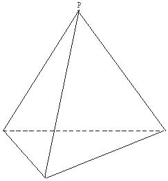
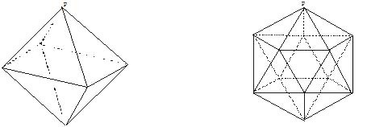

為什麼正多面體只有五種 江銘輝 五夢網
正多面體是各面都為全等的正多角形，且在各頂點組成的正多角形都是全等的多面體。它只有五種，即正四面體、正六面體、正八面體、正十二面體及正二十面體，統稱為柏拉圖正多面體，為什麼正多面體只有五種呢？我們證明如下：
一、正四面體是正多面體中最簡單者

如圖1，正四面體是由一頂點P聚集三個全等的正三角形和一個底面為正三角形而成，而由於正三角形的一個內角為，所以頂點所成三面角的角度為:
60。x3=180。<360。
故能在一個頂點P的周圍聚集全等的三角形，構成一個正三面角，再添加一個全等的正三角形，即成為正四面體。
圖1：正四面體
二、正八面體與正十二面體的形成
由正三角形所構成的正多面體，尚有多少種呢？

圖2：正八面體〈左〉與正十二面體〈右〉
如圖2之左圖p點：
60。x4=240。<360。
故能在一個頂點P的周圍聚集4個全等的正三角形構成一個正四面角，若從底面添加與此完全一樣的形狀，即構成正八面體。
故能在一個頂點P的周圍聚集5個全等的正三角形構成一個正五面角，若在各頂點依次形成與此相同的正五面角，即得正二十面體。
皆等於或大於，故不能在一個頂點P的周圍聚集6, 7, 8……等全等的正三角形，構成一個正多面角，自然已不能形成正多面體。
根據以上敘述，各面為全等的正三角形的正多面體，僅限於正四面體，正八面體，正二十面體共三種。
三、正六面體
讓我們再討論由全等的正方形構成的正多邊體有那些？
由正方形構成的正多邊形，最簡單的是正方體（如圖3），它是在一個頂點P的周圍聚集三個全等的正方形。由於它方形的一個內角為90。，而90。x3=270。<360。。
故能在一個頂點P的周圍聚集3個全等的正方形。若從反側添加與此完全相等的，即得一個正六面體即正方體。再考慮90。x4=360。，故不能在一個頂點P的周圍聚集四個全等的正方形。
根據以上所述，各面為全等正方形所形成的正多邊形，只有正六面體一種。
圖3：正六面體
四、正十二面體
我們已討論了，正三角形及正方形所形成的正多面體，現在我們討論由正五邊形是否也可構成正多面體。由於正五角形的一個內角為108。，而108。x3=324。<360。。
故如圖4，在一個頂點P的周圍聚集3個全等的正五角形，構成一個正三角形。若在各頂點依次形成與此相同的正三面角，即得正十二面體。再考慮108。x4=432。>360。
故不能在一個頂點S的周圍聚集4個全等的正五角形，構成一個正多面角。根據以上結果，各面為全等的正五角形的正多面體只有正十二面體這一種。
圖4：正十二面體
五、正六邊形以上的圖形無法構成正多面體
除了上述由正三邊形、正四邊形、正五邊形所構成之五種正多面體外，是否存在由正六邊形、正七邊形、正八邊形……所形成的正多面體呢？
我們的答案是“沒有”。理由是：在一個頂點P的周圍聚集3個以上的正六邊形，藉此形成正多面體。由些正六邊形的一個內角為120。，而120。x3=360。
故不能在一個頂點P的周圍聚集3個全等的正六邊形構成一個正三面角。當然也不能聚集4個以上全等的正六邊形構成一個正多面角。
因為一個正多邊形的內角的大小是隨著邊數增加而增大，故不能在一個頂點P的周圍聚集3個或3個以上的正七邊形，正八邊形……構成正多面邊，所以正六邊形以上的正多面體並不存在。
綜合上述所知，正多面體只有五種。